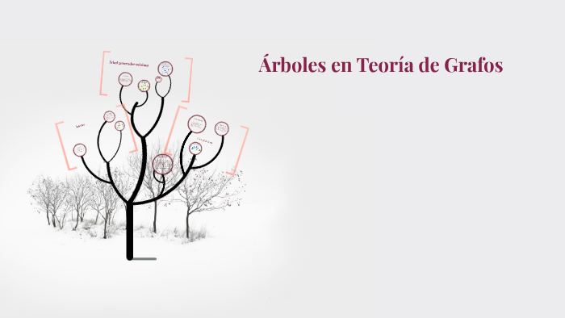
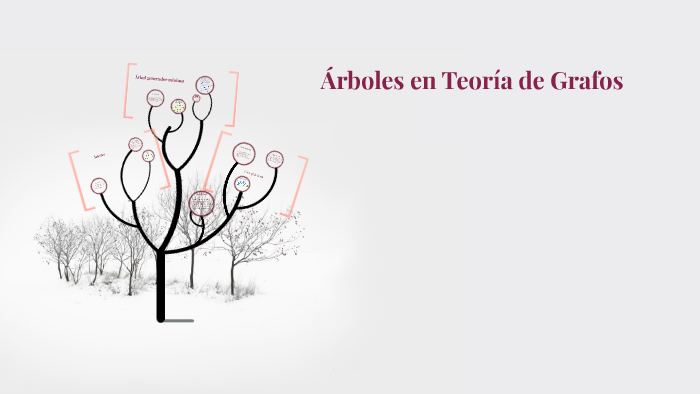
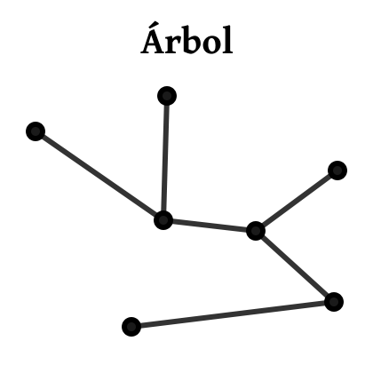
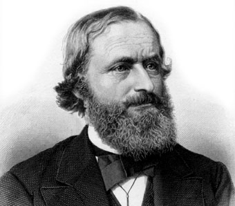
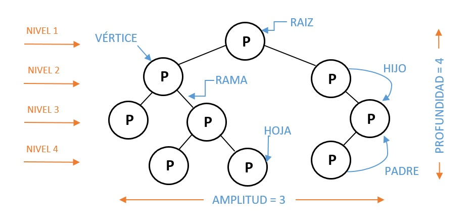
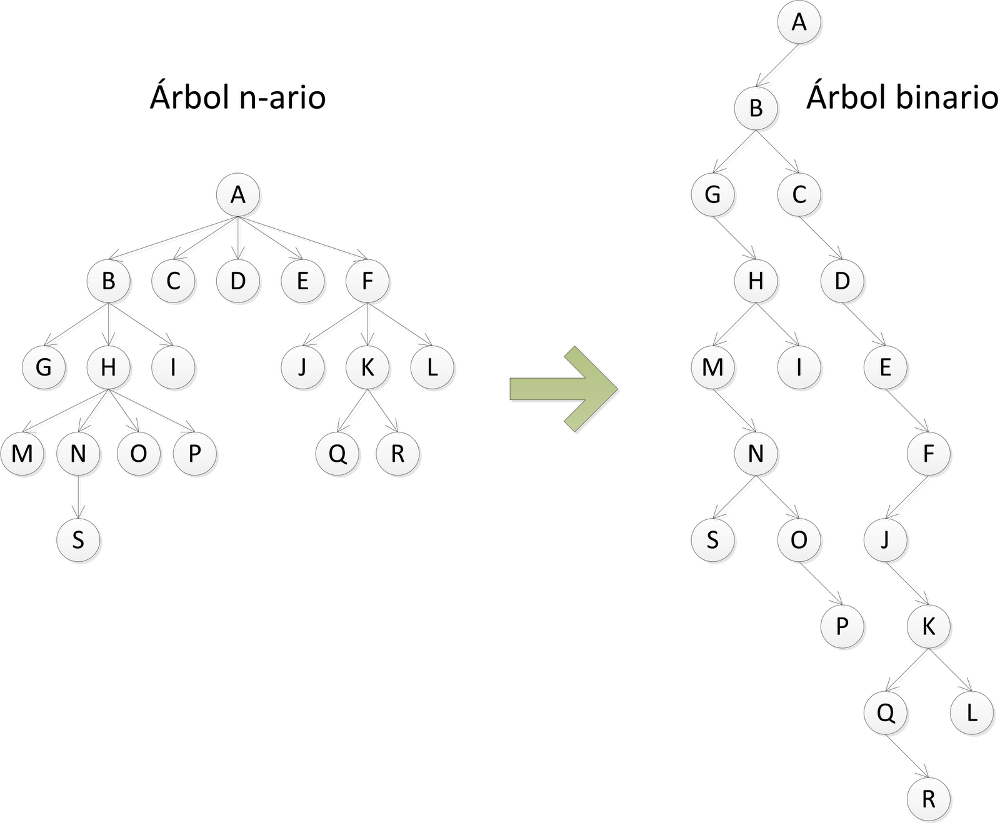

Árboles en Teoría de Grafos






Después de leer sobre los diferentes clases de árboles, responda:
Falso
Un árbol binario es una estructura de datos en la cual cada nodo no puede tener más de dos hijos.
Jose Waldo de la Ossa
Jairo Zabala Contreras
Carlos Anaya Arrieta
Bryan Pacheco Rodriguez
Ingeniería de Sistemas
Departamento de Ingenierías
Universidad de Córdoba
Marzo - 2019.
Obra publicada con Licencia Creative Commons Reconocimiento Compartir igual 4.0